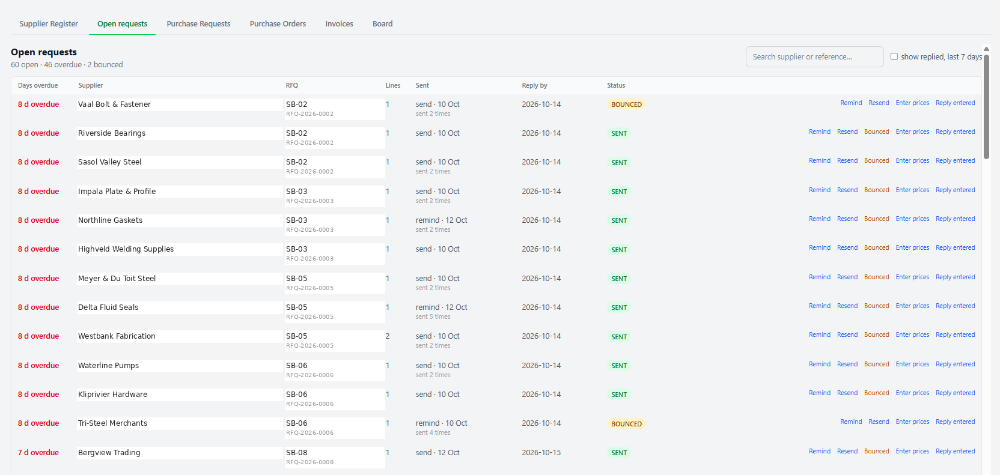
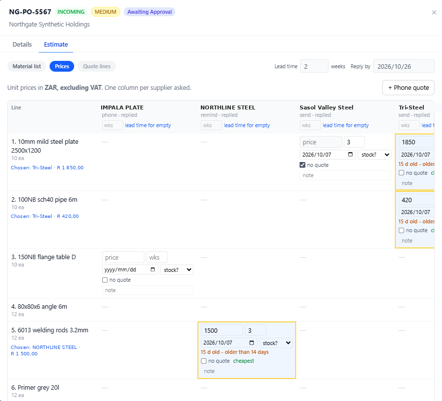
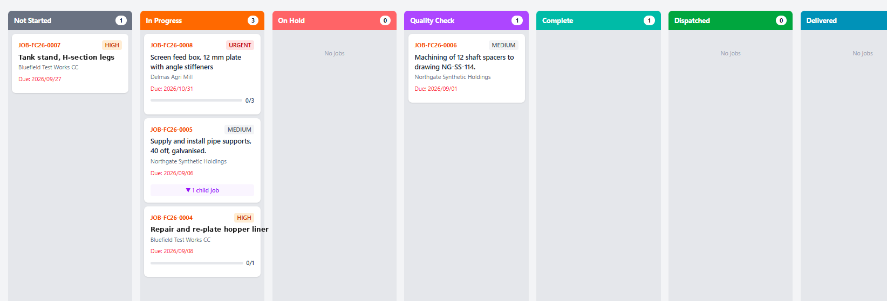

Jobbook.
From the enquiry
to the invoice.
The blue book at the counter, on a screen. Front office, quoter, buyer, foreman, dispatch and month-end in one system instead of six books that don't talk. Owner on his phone, foreman on a tablet, Pastel stays the book. Built on a fabrication floor in the Vaal Triangle; in production today.
From the blue book to the screen,
stage by stage.
Six stages, one chain. Four are live on a workshop floor today; two are being built with the buyer for November. Tap a stage for the full story.
01 · Enquiry · Live
One RFQ board.
TodayFourteen RFQ spreadsheets, a whiteboard, the blue book.
JobbookEvery enquiry, who's on it, what stage — from any phone.
Today. The client's email sits in one inbox. A row typed into an RFQ workbook — fourteen of them, one per year and per person. "Who's quoting this?" asked across the office.
On Jobbook. Allocation by name with receipt confirmation. Search across everything. Email at every stage.
02 · Quote · Live
Material list typed once.
TodayMaterial list in pen, a photo on WhatsApp, retyped into Pastel.
JobbookPrices beside each line, cost sheet with margin, copy for Pastel.
Today. A paper "quote-only" form. Prices scribbled in the margin. The cost sheet rebuilt in Excel, then retyped into Pastel.
On Jobbook. Cheapest price shaded, one chosen per line. Cost sheet and margin on the same screen. Copy for Pastel in its column order. Two-stage approval with e-signature.
03 · Buy · Live
Every open request on one screen.
TodayPrice requests chased from memory. A PO printed three times.
JobbookReminders in one click. Buy at or under the quoted price, per line.
Today. A supplier list in one spreadsheet one person keeps. A paper requisition walked to the MD. One PO for the supplier, one for stores, one filed for month-end.
On Jobbook. 283 suppliers in groups, one import. One email per supplier, only its lines. Dated prices that go amber when stale. Dearer than the quote waits for the MD, on screen. One PO per supplier.
04 · Make · Live
The foreman's tablet, not the whiteboard.
TodayA whiteboard wiped weekly. "Where's job 5590?" — walk to the shop.
JobbookWorkshop board: not started → in progress → QC → complete → dispatched.
Today. Job cards photocopied. Clock cards and a casual register in a book. QC on a signature.
On Jobbook. Workers and clock-ins per job, time per job, QC holding points, dispatch with delivery number, job card as a PDF. One tablet per bay.
05 · Receive · Nov 2026
Open items per order.
TodayDelivery notes matched by hand. A stock list nobody trusts.
JobbookOrdered, delivered, invoiced, credited, days open — on the row.
Today. Short deliveries remembered, or not. Returns and credits on a sticky note. Stock in Excel.
On Jobbook. Short deliveries and returns on the order row. A stock list that grows as you buy. Being shaped with the buyer on a test copy now.
06 · Invoice · Nov 2026
Job cost on a screen.
TodayMonth-end from the filed third copy of every PO. Cash-in guessed.
JobbookQuoted, ordered, invoiced per job. Cash-in by week.
Today. Cash-in guessed from quote values and who usually pays late.
On Jobbook. Cash-in by week from quote values and payment terms. Pastel stays the book; the system does the remembering.
Three screens the owner, the buyer and the foreman look at first.



Start with the two that hurt most.
Add the rest in your order.
One module per stage of the chain above. The seventh builds itself from day one.
Front office
RFQ board, client register, allocation with receipt, two-stage e-signature approval.
Quoting
Material list, send for price, prices in a grid, cost sheet with margin, copy for Pastel.
Procurement
Supplier register, open requests, dated prices, orders at the quoted ceiling, one PO per supplier.
The shop
Job and workshop boards, clock-ins, QC holding points, dispatch, job card PDF. On a tablet.
Receiving & store
Open items per order, short deliveries, returns, a stock list that grows as you buy.
Job cost & cash
Quoted, ordered, invoiced per job. Cash-in by week.
Jobbook learns
Every job, price and clock-in is recorded from day one. After a few months it answers what the blue book never could: which quotes you'll win, how long a job like this really takes, which supplier will be late, what the margin was on the last ten like it. No rebuild — it's ready when you are.
Pastel starts when you buy.
Jobbook is everything before that.
Accounting packages begin when the money moves. Overseas job-shop tools don't know Pastel and don't come to your floor. Jobbook does the work in front of Pastel, then hands it the lines.
The counter
Enquiry → Quote → Buy → Make → Receive
- RFQ board
- Material list
- Supplier prices
- Order at the quote
- Shop floor
- Delivery notes
in Pastel's column order
typed back
The accounts
Quote no. → PO no. → Invoice no.
- Quotes
- Purchase orders
- Invoices
- Month-end
Two numbers. No surprises.
Quoted in writing before anything is built. The date is named, then kept.
- Front office and Quoting live in your workshop
- Your suppliers, clients, people and forms loaded for you
- Your team trained on your own jobs, at your counter
- Each further module scoped and priced as a two-week sprint
- Hosting, backups, mail, security updates
- Support on WhatsApp — the person who built it answers
- Unlimited users — the MD, the buyer, the foreman, the floor
- Cancel with a month's notice; you keep your data and the code
In production on a workshop floor,
every link in the chain.
Built with a fabrication and construction company in the Vaal Triangle, from their own Excel workbooks and paper forms. In daily use in the office, in procurement and on the shop floor.
"I have to stay inside the quoted amount."
The buyer — the sentence Jobbook's procurement module was built aroundRead how it happened, stage by stage
It started as an RFQ board replacing fourteen spreadsheets. Now the front office, quoting, the supplier register, price requests and the shop floor are live; the order and receiving screens are being shaped with the buyer on a test copy before they go live. Every release is walked as every role, promoted on the date, with a rollback ready.
The buyer's problem. The job is won two or three weeks after the quote. The supplier who had stock no longer does. She re-sources at or under the quoted price, chases what is late, matches delivery notes to orders, and files the third copy of every PO so month-end can see what the job really cost. Jobbook remembers what she is owed, so she doesn't have to.
The client's name follows once it is in writing. Ask for a walkthrough →
Four steps. You see where you are in every one.
Fifteen minutes on WhatsApp
Enquiry to dispatch, on your phone, with practice data. Not for you? That's the end of it.
A morning on your floor free
We walk your paper and write down, in your words, what Jobbook must do — with a price and a date.
Your people try it first
Buyer, quoter and foreman use a test copy with your suppliers and forms loaded, and tell us what's wrong.
Live on the date
The date we named, trained at your counter, previous version one command away. The next module builds on top.
See Jobbook in fifteen minutes.
On WhatsApp, on your phone, with practice data. No slides. If it fits, we book a free morning on your floor — in person in the Vaal and Gauteng, on screen anywhere in South Africa — and you leave with a written scope, a price and a date.
Questions workshops ask.
We run on Pastel. Does Jobbook replace it?
No. Pastel stays your book of record for quotes, POs and invoices. Jobbook does everything in front of it and hands Pastel the lines in its own column order; PO and invoice numbers are typed back.
It's one person. What if he disappears?
The hosting is in your name, the code in your repository, the documentation in your drive, and every screen is standard React and PostgreSQL. Any competent developer picks it up in a day. That's deliberate.
Our people aren't computer people.
Neither were the people it was built with. Each screen is shaped with the person who does that job, on a test copy, before it goes live. Big buttons, plain words, nothing you can break by pressing.
How long until we're on it, and can we start with one part?
Front office and Quoting go live in weeks, with your suppliers, clients and forms loaded for you. Each further module is a two-week sprint, in your order. Most workshops start with Quoting and Procurement — that's where the money leaks. Once a date is confirmed, it holds.
We're not in the Vaal. Does that matter?
No. Jobbook runs in the browser on AWS, so Pretoria, Durban or Cape Town run it the same way. The scoping morning is in person across the Vaal and Gauteng and on screen everywhere else.
Load-shedding and no signal on site?
Built to keep working on a phone with unreliable signal, to notify the team over WhatsApp, and hosted on AWS with daily backups. When the power comes back, so does the office.
Why "PUSH AI" if the page never mentions AI?
Because the AI isn't the product; the blue book on a screen is. AI tooling builds Jobbook fast under a human gate — a person reads every change before it reaches you — and Jobbook records every job, price and clock-in from day one so it can start answering questions after a few months. Ready when you are.
Then I arrived in engineering and fabrication.
Ran delivery for Nedbank, Discovery, Investec and MTN — the kind of systems that can't go down and can't miss the date. Then one morning at a counter in Vanderbijlpark, next to the buyer: a requisition in pen, a PO printed three times, a quote gone stale between winning the job and ordering the steel. Nobody had built for her. So we built it on her floor, one screen at a time. That became Jobbook.
Len Klopper · Henley on Klip · PUSH — Pray Until Something Happens · Proverbs 16:3
Delivery lead
Nedbank, Discovery, Investec, MTN. The review gate comes from there.
A buyer, a requisition, a stale quote
Built with her, on her floor. Walked as every role before every release.
Live, and growing
Receiving, stock, job cost and cash-in by December. Then every workshop in Gauteng and South Africa still on a blue book.